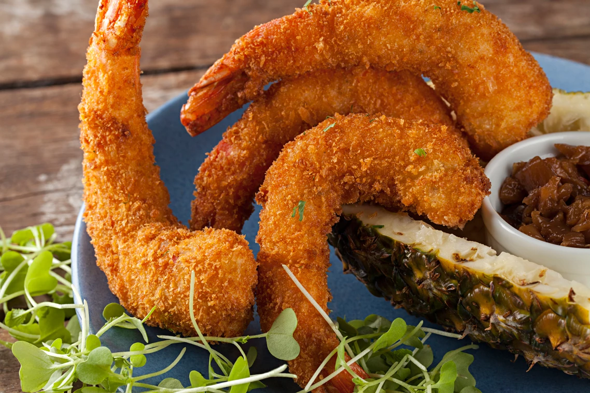
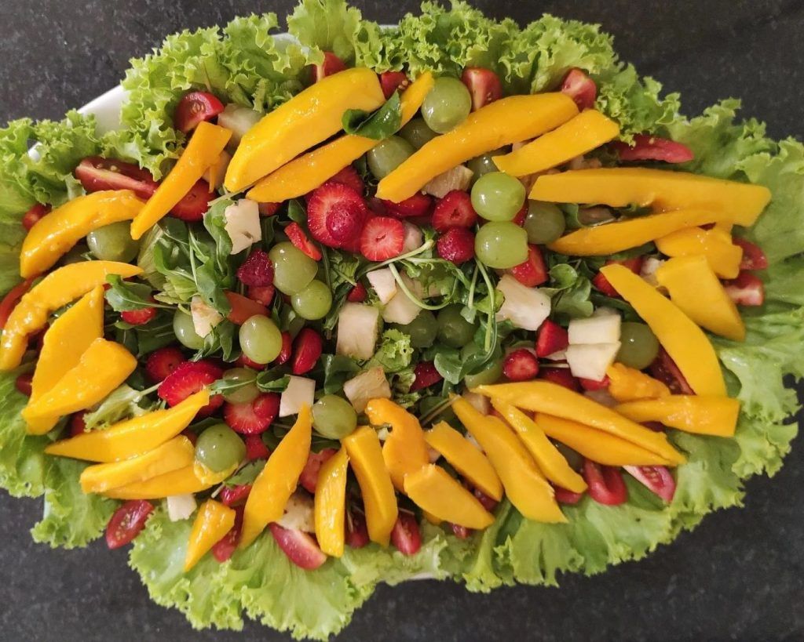
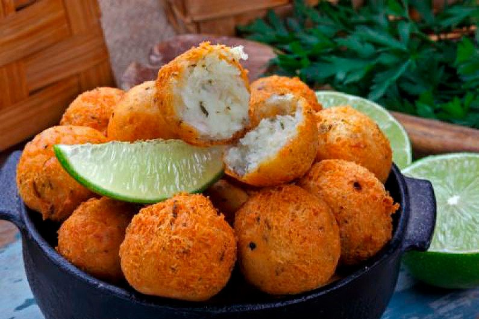
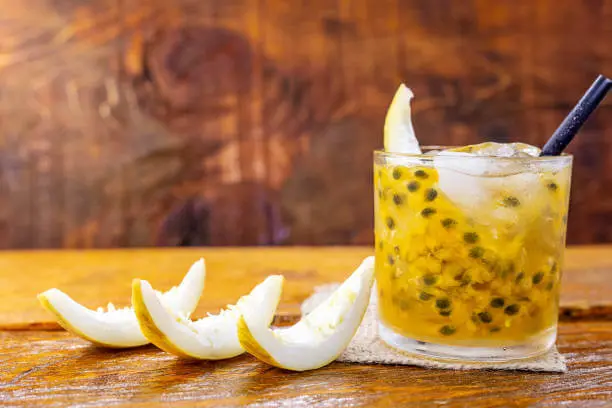

| Imagem: | Nome: | Descrição: | Valor: |
|---|---|---|---|
 |
Ceviche de Peixe Tropical | Peixe branco marinado em suco de limão
com cebola roxa, coentro, pimentão e manga. |
R$: 25,00 |
|  | Camarões Empanados
com Coco |
Camarões suculentos empanados com coco ralado e
servidos com molho de abacaxi picante. |
R$: 35,00 |
|  | Salada Tropical |
Mix de folhas verdes, pedaços de abacate, manga,
papaia, e amêndoas torradas, com um leve molho de maracujá. |
R$: 15,00 |  | Bolinho de Peixe com Molho de Limão e Coentro |
Bolinhos crocantes feitos com peixe fresco e temperos tropicais,
servidos com molho de limão e coentro. |
R$: 20,00 |
 |
Mousse de Maracujá | Mousse leve e refrescante feita com maracujá fresco, decorada com sementes de maracujá. | R$: 7,00 |
| Torta de Coco com Abacaxi | Deliciosa torta de coco com uma camada de compota de abacaxi, servida com chantilly. Sorvete Artesanal de Frutas Tropicais. | R$: 10,00 | |
|  | Caipirinha de Maracujá | Clássica caipirinha feita com maracujá fresco, cachaça, açúcar e gelo. Mojito de Abacaxi. | R$: 12,00 |
* Imagens meramente ilustrativas. A aparência dos pratos podem variar.